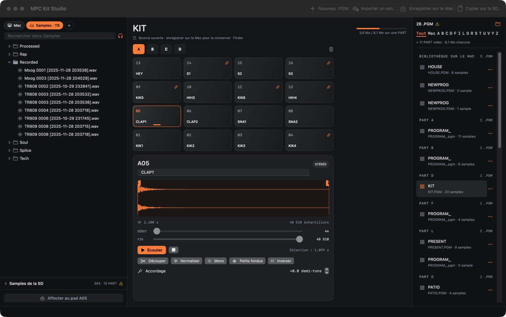
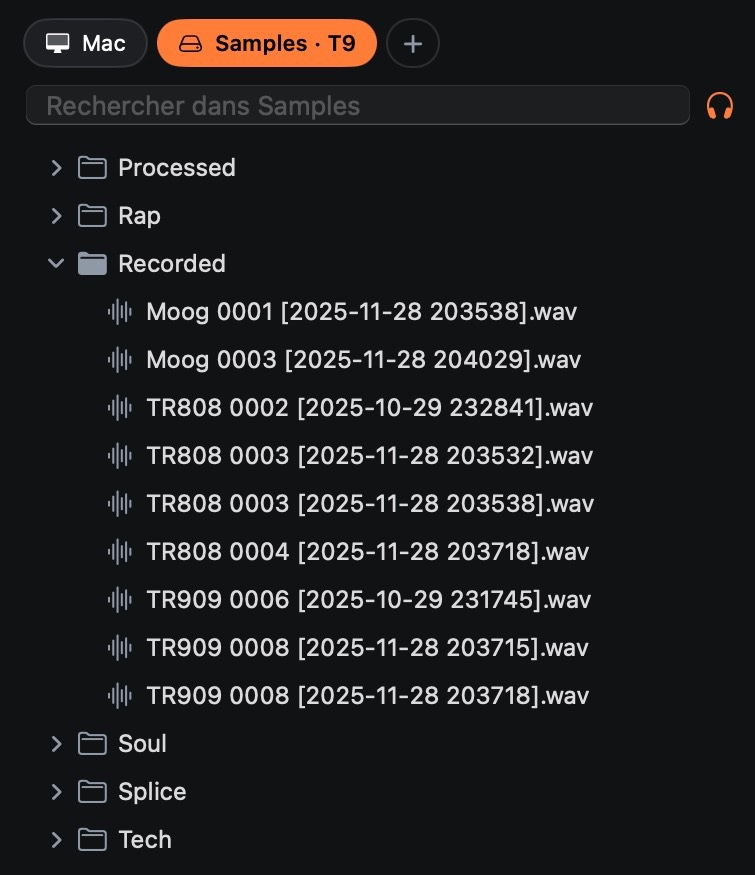
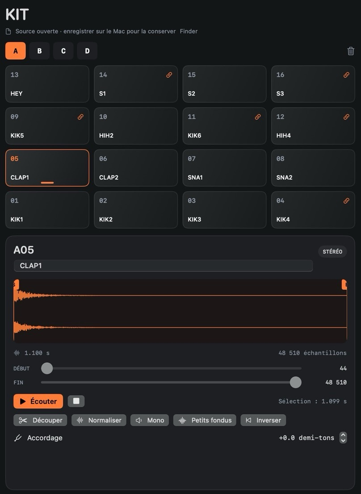
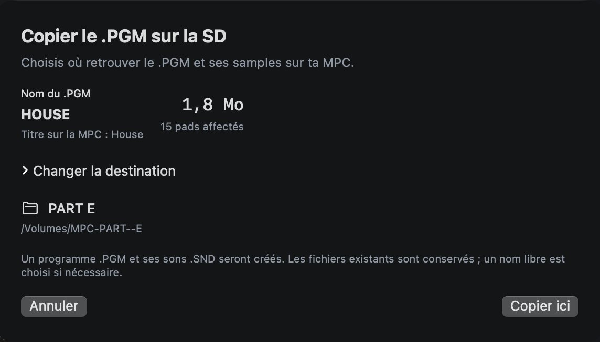

Kit for MPC3000
Des banks de samples pour la MPC3000, préparées sur le Mac.

Ma MPC3000 lit une carte SD à la place d’un disque dur. Mettre des samples dessus a toujours été la partie lente : convertir les fichiers, garder chaque nom à huit caractères, vérifier que la bank tient dans une partition, puis copier les bons fichiers au bon endroit. Kit for MPC3000 fait cette partie à ma place.
Je ne suis pas développeur. J’ai décidé de ce que l’app devait faire, une IA (Claude) a écrit le code, et j’ai essayé chaque version avec ma carte et mes samples. Je la vends aux quelques personnes qui ont la même config, pour ce qu’elle est.
Ce qu’elle fait
- Tu glisses des fichiers WAV, AIFF ou SND sur les 64 pads, de A01 à D16. Ils sont convertis au format SND de la MPC.
- Tu parcours tes dossiers de samples en arborescence et tu écoutes d’un clic.
- Tu nommes, découpes et accordes chaque sample, et tu vois le nom de huit caractères qui sera écrit sur la carte.
- Avant la copie, elle t’indique si la bank tient dans une partition.
- Elle copie le programme et ses sons sur une partition vide. Rien de ce qui est déjà sur la carte n’est écrasé ni supprimé.
- Tes programmes restent dans une bibliothèque sur le Mac, avec ou sans la carte.



Détails
- Fonctionne avec
- Une MPC3000 sous l’OS Vailixi 3.50, un adaptateur SCSI vers SD modèle, et une carte formatée par la MPC en partitions Hybrid, que le Mac monte sous les noms MPC-PART--A à Z.
- Pas avec
- Les autres MPC, les disquettes ou les lecteurs Zip. L’OS Akai d’origine n’est pas testé.
- Mac
- macOS 13 ou plus récent, puce Apple (M1 et suivantes).
- Langue
- Français. Une version anglaise de cette page existe ; l’app n’est pas traduite.
- Internet
- L’app ne s’y connecte jamais.
- Assistance
- Aucune. Des corrections quand je tombe sur un bug.
- Prix
- 29 € TTC, payés une fois.
Avant d’acheter
Il n’y a pas d’assistance. Quand un bug me gêne, je le corrige, et la mise à jour est aussi pour toi. Je n’ajouterai pas de fonctions sur demande : l’app fait ce dont j’ai besoin, et je veux qu’elle reste petite.
Elle n’ouvre pas les séquences, elle ne joue pas comme une MPC, et la préécoute ne reproduit ni les filtres ni les enveloppes de la MPC. Fais une copie de ta carte avant de t’en servir. J’en garde une de la mienne.
Acheter
29 € TTC
Tu reçois l’app Mac, signée et notarisée par Apple, et les mises à jour de la version 1. Après le paiement, je t’envoie le lien de téléchargement par mail, en général dans la journée. Si elle ne fonctionne pas avec ta config, écris-moi dans les 14 jours et je te rembourse.
Le paiement passe par Link, le système de paiement de Stripe, qui t’envoie le reçu et la facture. La TVA est comprise dans le prix.
Questions
- Ça marche avec l’OS Akai d’origine ?
- Je ne sais pas, je n’ai pas essayé. Sur ma machine, ce sont les partitions Hybrid de Vailixi 3.50 qui permettent au Mac de lire la carte.
- Quel adaptateur utilises-tu ?
- modèle. Kit for MPC3000 ne parle pas à l’adaptateur. Il lit seulement les partitions que macOS monte.
- L’app sera traduite ?
- Peut-être, si on me le demande. Je ne promets pas de date.
- Je peux la partager ?
- Il n’y a pas de protection anti-copie. Si un ami finit par s’en servir, ça me ferait plaisir qu’il achète la sienne.
- Comment se font les mises à jour ?
- J’envoie les nouvelles versions par mail à tous ceux qui l’ont achetée. L’app ne vérifie rien toute seule.
- Comment te joindre ?
- adresse de contact. Je lis tout, je ne réponds pas toujours.